Percorsi per le Competenze Trasversali e l'Orientamento
PCTO
Due esperienze molto diverse tra loro, entrambe fondamentali per la mia crescita personale e professionale.
Nel corso del triennio ho avuto l'opportunità di partecipare a due esperienze molto diverse tra loro, ma entrambe fondamentali per il mio percorso di crescita personale e professionale.
La prima esperienza si è svolta presso il Teatro Pergolesi di Jesi, dove ho lavorato nell'ambito dell'illuminotecnica durante la preparazione dello spettacolo "Le Ombre di Don Giovanni". Qui ho scoperto il lavoro che si nasconde dietro le quinte di una produzione teatrale, collaborando con studenti di scuole diverse e con professionisti del settore.
La seconda è stata l'esperienza Erasmus in Irlanda, durante la quale ho svolto attività lavorative presso il PC Maestro, un negozio e centro assistenza informatica. Questa esperienza mi ha permesso di confrontarmi con un contesto internazionale, utilizzare la lingua inglese nella vita quotidiana e sviluppare una maggiore autonomia vivendo lontano da casa per un mese.
Pur essendo molto differenti tra loro, queste due esperienze mi hanno insegnato qualcosa di importante: adattarmi a contesti nuovi, lavorare con persone diverse e affrontare situazioni che richiedono responsabilità, collaborazione e spirito di iniziativa.
Esperienza 1 — Jesi
Teatro Pergolesi — Illuminotecnica
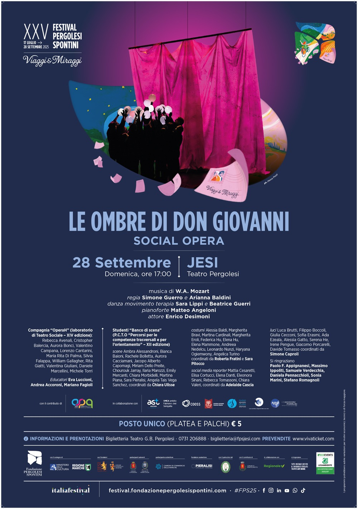
Il Teatro Pergolesi di Jesi
Il mio percorso PCTO si è svolto presso il Teatro Pergolesi di Jesi, uno dei luoghi culturali più importanti del territorio. Durante questa esperienza ho avuto l'opportunità di entrare in contatto con il mondo dello spettacolo dal vivo, scoprendo tutto il lavoro che si svolge dietro le quinte per rendere possibile una rappresentazione teatrale.
L'attività era legata alla realizzazione dello spettacolo "Le Ombre di Don Giovanni", interpretato da un gruppo di ragazzi con disabilità. Questo progetto non rappresentava soltanto un evento artistico, ma anche un'importante esperienza di inclusione e collaborazione.
Il mio ruolo: supporto all'illuminotecnica
Durante il percorso ho lavorato nell'ambito dell'illuminotecnica insieme ad altri studenti del mio istituto e del Liceo Artistico. Il nostro compito era studiare e progettare l'illuminazione dello spettacolo, scegliendo intensità, colori e atmosfere luminose in base alle diverse scene e alle emozioni che volevamo trasmettere al pubblico.
Ho così scoperto quanto la luce sia uno strumento fondamentale nella narrazione teatrale: una semplice variazione di colore o di intensità può cambiare completamente la percezione di una scena e contribuire a raccontare una storia senza bisogno di parole.
Attività svolte
Progettazione delle luci
Abbiamo analizzato le diverse scene dello spettacolo e deciso come utilizzare le luci per valorizzare i momenti più significativi. Ogni scelta veniva fatta tenendo conto delle emozioni, dell'ambientazione e del messaggio che la scena voleva trasmettere.
Collaborazione con il team artistico
Durante il percorso abbiamo lavorato a stretto contatto con studenti provenienti da indirizzi diversi, imparando a confrontarci e a prendere decisioni condivise. Questa collaborazione mi ha fatto capire quanto sia importante il contributo di ogni persona all'interno di un progetto comune.
Dietro le quinte
Uno degli aspetti che mi ha colpita maggiormente è stata la possibilità di vivere il teatro da una prospettiva completamente diversa rispetto a quella dello spettatore. Ho potuto osservare il lavoro di preparazione, le prove, l'organizzazione e tutto ciò che avviene prima che il sipario si apra.
Confronto con il regista
Abbiamo avuto occasione di dialogare con il regista dello spettacolo e confrontarci sulle scelte artistiche. Questo aspetto mi ha interessata particolarmente perché ha creato un collegamento con una mia grande passione: la fotografia. Come nella fotografia, anche nel teatro luci, colori e inquadrature visive contribuiscono a raccontare una storia e a trasmettere emozioni.
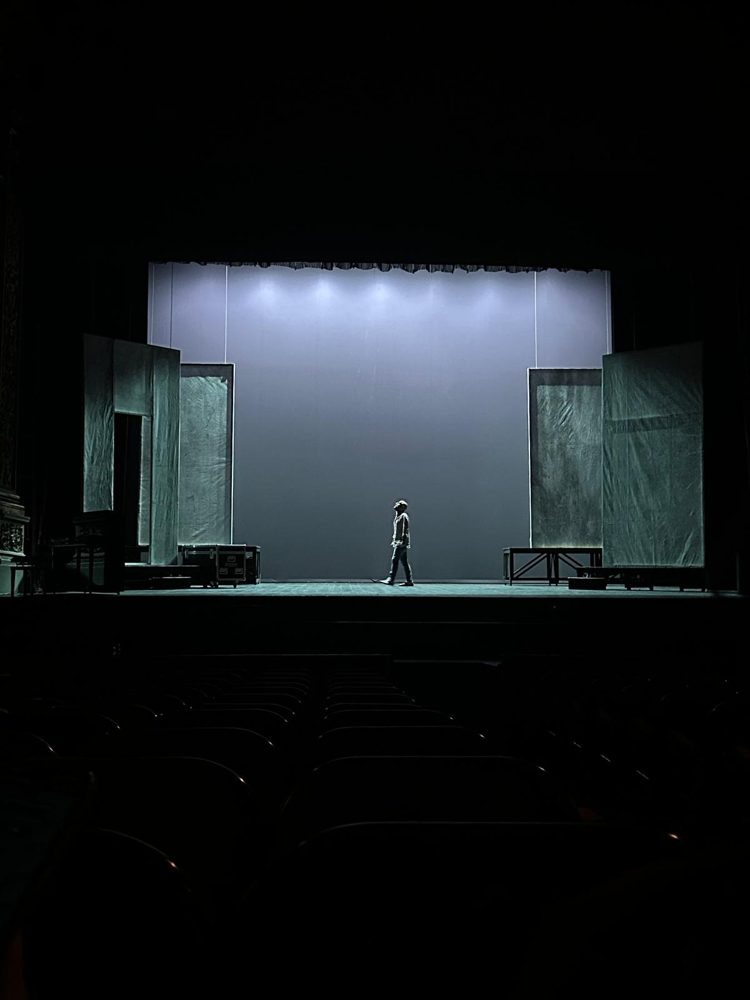
L'aspetto umano dell'esperienza
La parte che porto maggiormente con me non riguarda soltanto ciò che ho imparato dal punto di vista tecnico. Lavorare con i ragazzi protagonisti dello spettacolo è stata un'esperienza che mi ha lasciato molto a livello personale.
Ho conosciuto persone straordinarie, capaci di trasmettere entusiasmo, spontaneità e autenticità. Vedere il loro impegno e la loro emozione durante la preparazione dello spettacolo mi ha fatto comprendere ancora di più il valore dell'inclusione e dell'importanza di creare opportunità in cui ognuno possa esprimere il proprio talento.
Competenze sviluppate
Hard Skills
- Principi base di illuminotecnica teatrale
- Progettazione delle luci per uno spettacolo
- Analisi degli effetti visivi e cromatici
- Organizzazione di un evento teatrale
- Collaborazione con figure artistiche e tecniche
Soft Skills
- Lavoro di squadra
- Comunicazione e confronto con persone diverse
- Capacità organizzative
- Problem solving
- Sensibilità verso l'inclusione e il lavoro sociale
- Adattamento a contesti nuovi
Riflessione personale
Questa esperienza mi ha permesso di scoprire un ambiente che non conoscevo e di vedere da vicino il lavoro che si nasconde dietro uno spettacolo teatrale. Mi ha fatto capire quanto ogni dettaglio, anche quello che il pubblico spesso non nota, contribuisca al risultato finale.
Soprattutto, mi ha lasciato qualcosa di importante a livello umano. Ho imparato che la collaborazione, il rispetto e la capacità di valorizzare le persone sono elementi fondamentali in qualsiasi progetto. Inoltre, il confronto con il regista e il lavoro sulle luci hanno rafforzato il mio interesse per la fotografia, facendomi comprendere ancora di più quanto immagini, colori e atmosfera possano raccontare emozioni e storie.
Esperienza 2 — Dublino
Erasmus in Irlanda — PC Maestro
Durante l'estate del quarto anno ho partecipato a un progetto Erasmus in Irlanda, un'esperienza che ha rappresentato una delle tappe più importanti del mio percorso scolastico e personale. Per un mese ho svolto il mio PCTO presso PC Maestro, un negozio e centro di assistenza informatica situato a Dublino.
Lavorare in un contesto internazionale mi ha permesso di mettere in pratica le competenze acquisite a scuola e, allo stesso tempo, migliorare l'utilizzo della lingua inglese in situazioni reali. Fin dal primo giorno mi sono sentita accolta e valorizzata da tutto il team, che mi ha aiutata a inserirmi rapidamente nell'ambiente di lavoro.
Attività svolte
Durante il periodo di stage sono stata affiancata principalmente da Mate, responsabile del negozio e mio tutor aziendale. Nella prima settimana mi ha seguito passo dopo passo, spiegandomi le procedure, gli strumenti utilizzati e il metodo di lavoro adottato dal team. Con il passare del tempo ho acquisito maggiore sicurezza e ho iniziato a svolgere diverse attività in autonomia, pur sapendo di poter contare sul supporto dei colleghi in caso di necessità.
Nel negozio lavoravano anche altri tre tecnici, sempre disponibili ad aiutarmi e a condividere la loro esperienza. Ho inoltre avuto l'opportunità di lavorare insieme ad altri due studenti Erasmus provenienti dal Portogallo, con i quali ho condiviso parte dell'esperienza professionale e personale.
Questa esperienza mi ha permesso di osservare da vicino il funzionamento di un centro di assistenza informatica e di comprendere l'importanza dell'organizzazione, della precisione e della collaborazione all'interno di un team di lavoro.
Cosa mi ha lasciato questa esperienza
Oltre alle competenze tecniche, ciò che porterò sempre con me è il lato umano di questa esperienza. Per la prima volta mi sono trovata a vivere e lavorare lontano da casa per un periodo prolungato, dovendo gestire in autonomia situazioni nuove e confrontarmi ogni giorno con una lingua e una cultura diverse.
Fin dal primo momento mi sono sentita accolta e parte del gruppo. Il rapporto creato con Mate e con gli altri colleghi ha reso l'esperienza ancora più significativa, permettendomi di lavorare in un ambiente sereno, stimolante e ricco di insegnamenti.
Questo mese in Irlanda mi ha aiutata a diventare più indipendente, più sicura di me stessa e più aperta verso ciò che è diverso da ciò a cui ero abituata. Mi ha insegnato che spesso la crescita personale nasce proprio quando si decide di uscire dalla propria zona di comfort.
Galleria dell'esperienza
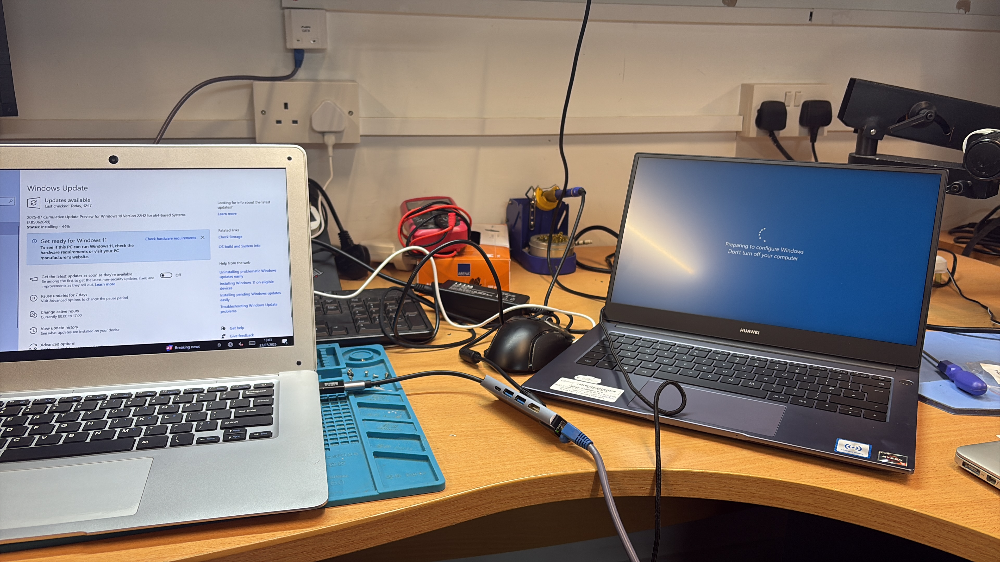
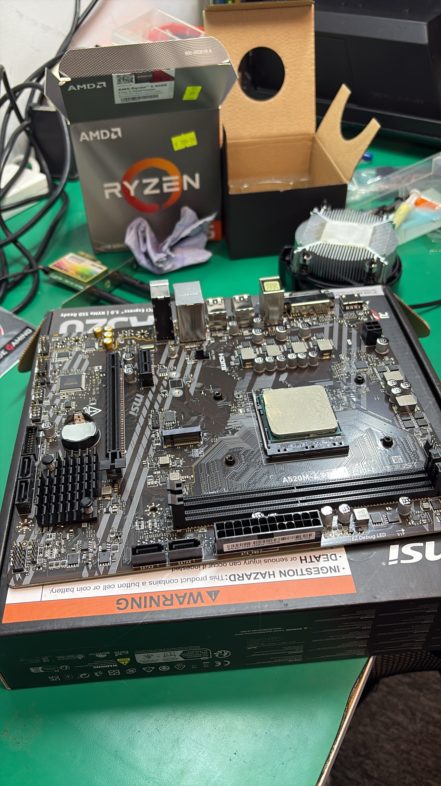
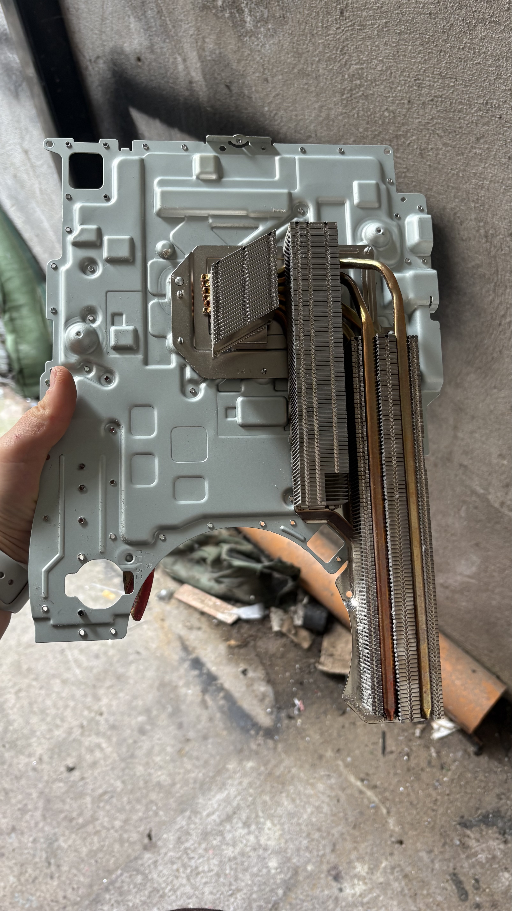
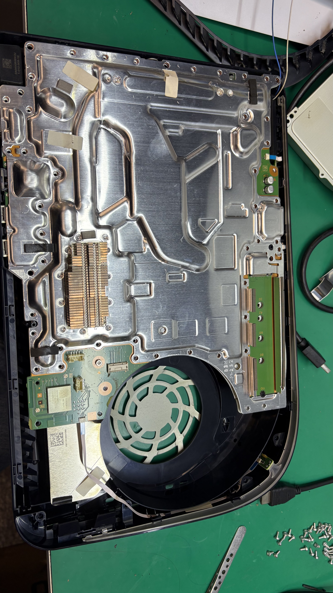
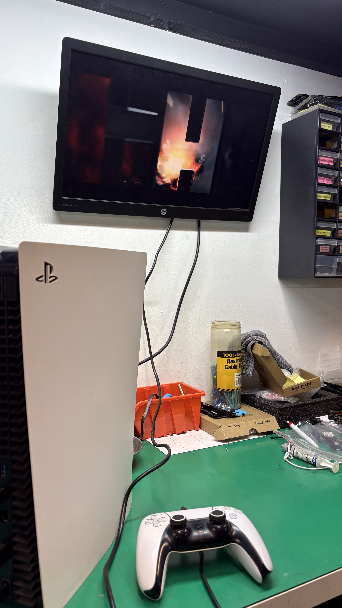
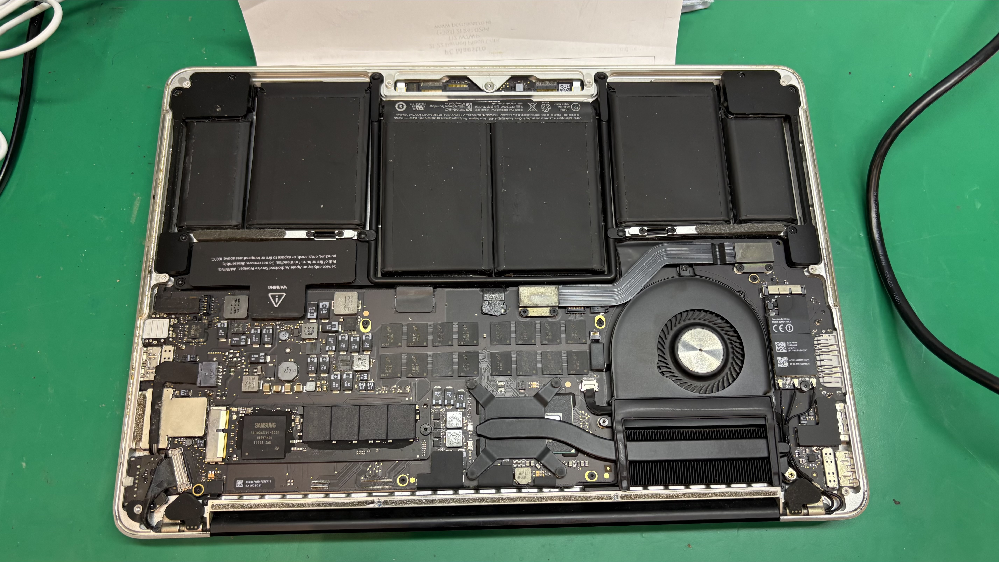
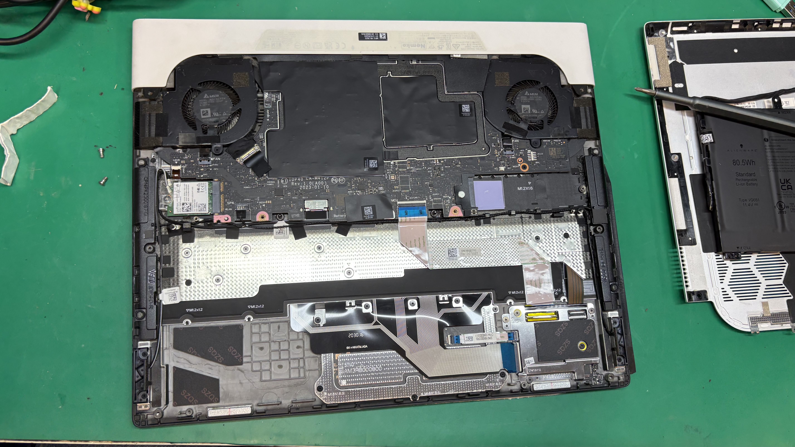
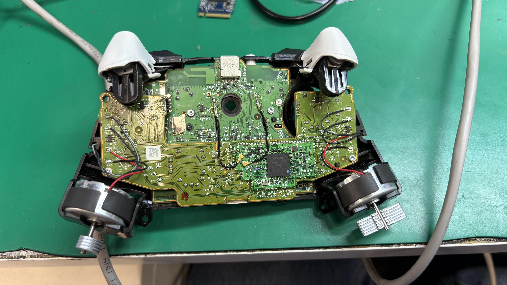
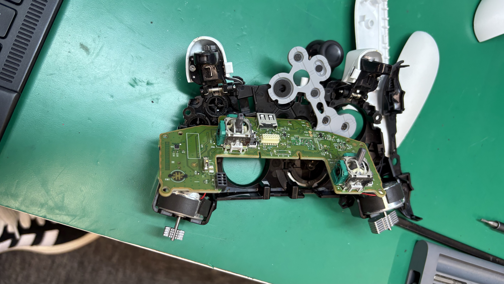
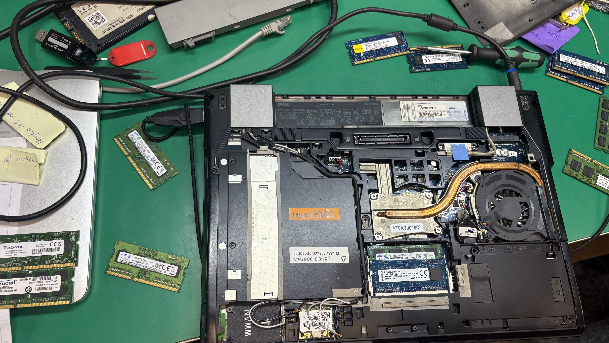
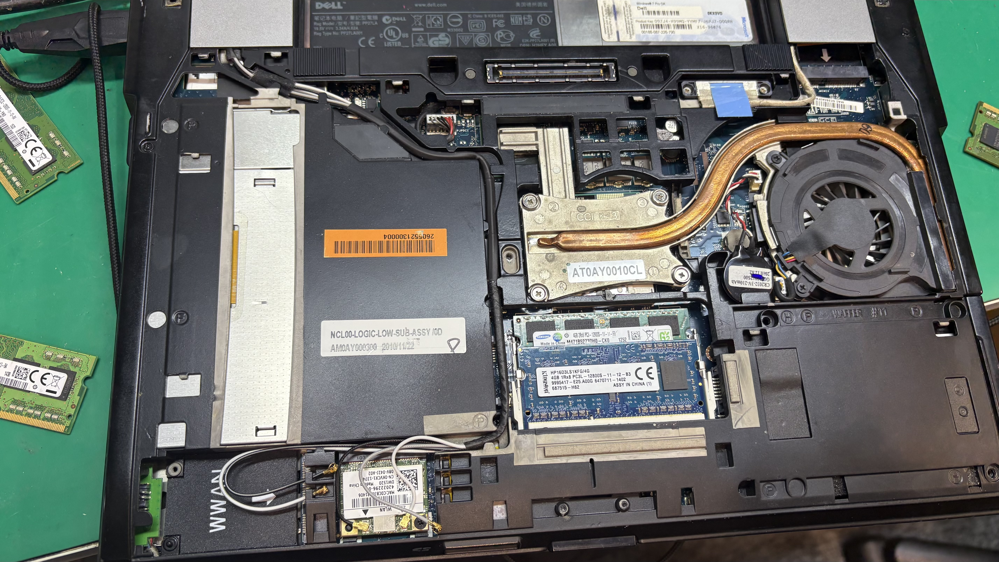
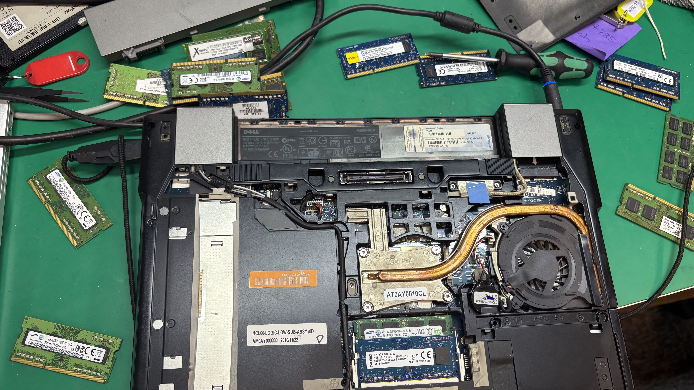
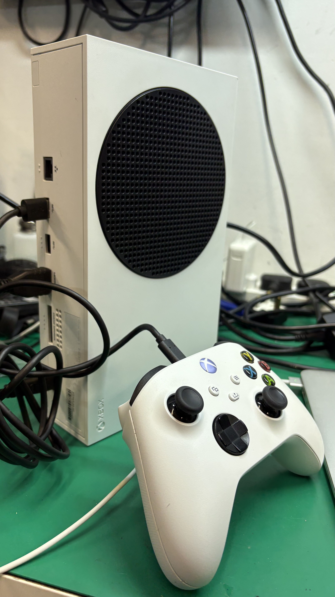
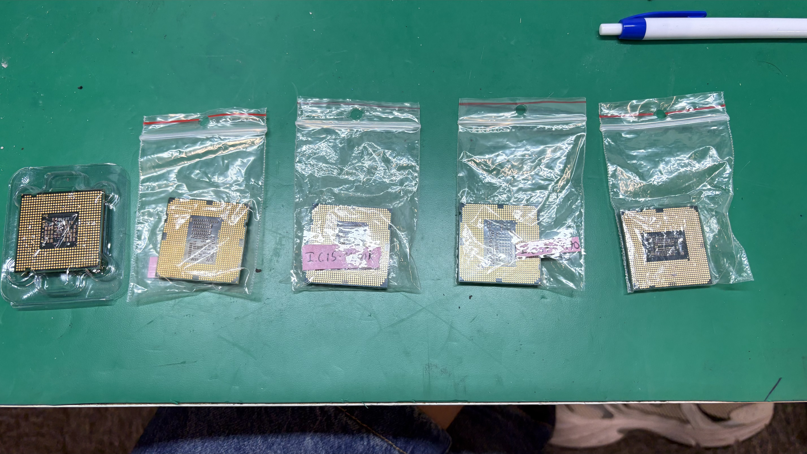
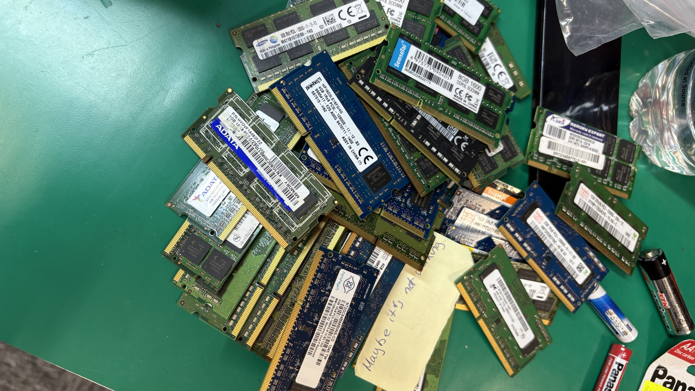
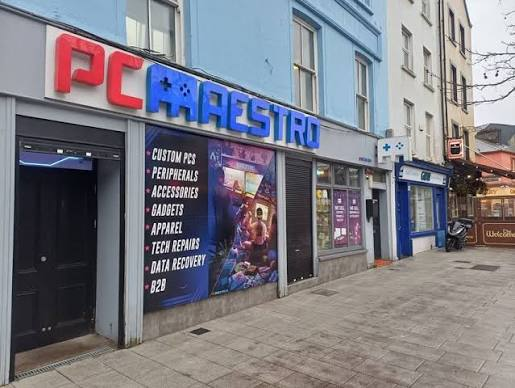
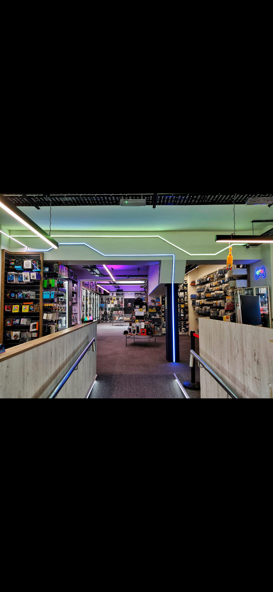